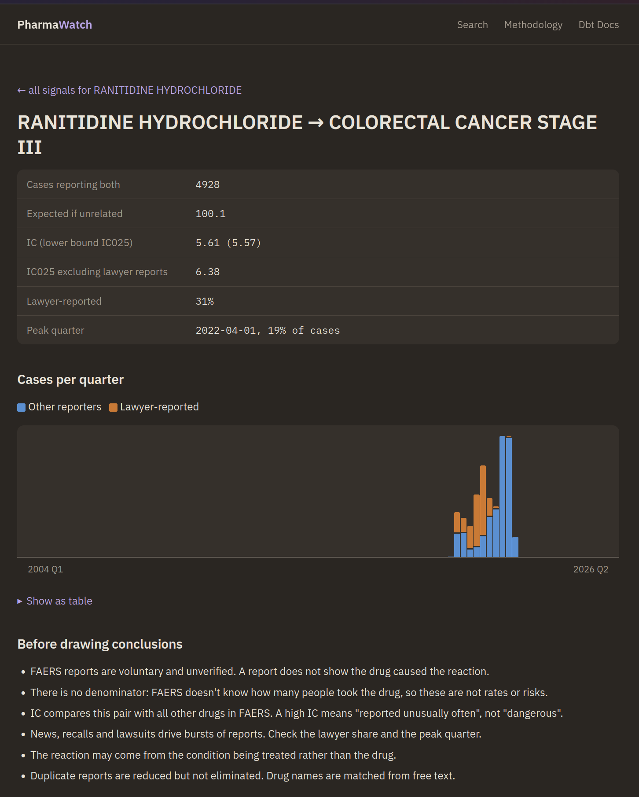
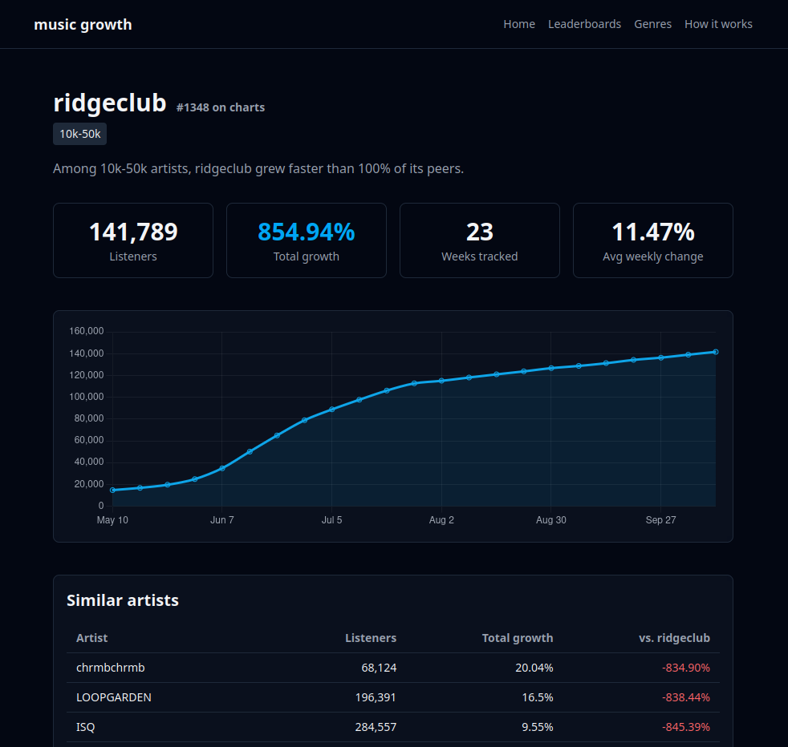

Building data pipelines that end in a live, interactive product that's easy to use.
projects
Drug safety signals from every FDA adverse event report since 2004. Search a drug and see which reactions are reported unusually often for it.
20.6M cases · 11,954 drugs · 2.85M pairs scored

Last.fm listener growth tracking across 37k+ artists.

completed / archived
about
CS graduate based in the Milwaukee area. I enjoy solving problems that involve cleaning and transforming messy data, and displaying those insight in the form of live, interactive sites.
Each of my projects run the full stack: ingestion, transformation, warehousing, and, at times, machine learning, rag, and some cloud architecture.
♜ stack ♖
languages
data & storage
ml
frontend
infra